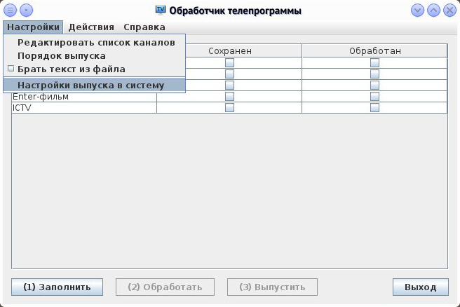

Інтерфейс програми
Інтерфейс програми
Загальний опис:
Утиліта обробки тексту телепрограми. Дозволяє ввести тест програми по каналах і отримати текст по днях. Додаткова можливість: випуск тексту телепрограми до системи "Стрічка".
Список залежностей:
- libRibbonApp - бібліотека ядра програми;
- libRibbonData - бібліотека структур даних;
Утиліта зберігає окремий файл RibbonTVProg.Release.properties для налаштувань з’єднання до системи "Стрічка". Цей файл зберігається разом з глобальним конфігураційним файлом.
Параметри у файлі RibbonTVProg.Release.properties:
- release_channel[Булеве] - вмикач випуску тексту програми по каналах;
- release_chn_dir[Рядок] - напрямок системи на який буде випускатись текст по каналах;
- release_day[Булеве] - вмикач випуск тексту програми по днях;
- release_day_dir[Рядок] - напрямок системи на який буде випускатись текст по днях;
- release_aloow_incomplete[Булеве] - вмикач випуску неповного тексту;
release_day_dir=[ТВ.Дні] release_chn_dir=[ТВ.Канали] release_channel=true release_aloow_incomplete=false release_day=trueТакож програма у своєї робочої теці зберігає свій службовий файл tvSet.properties зі списком каналів для перевірки.